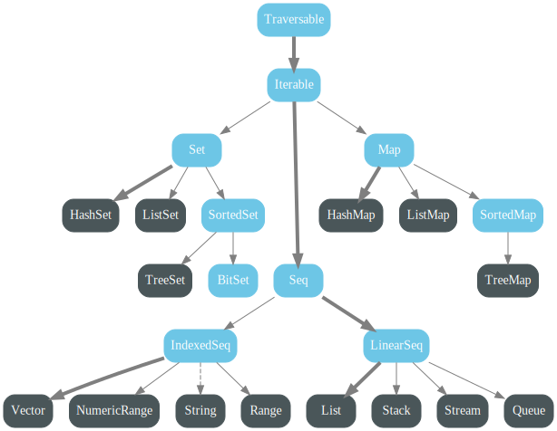

Programfejlesztes Scalaban
Scala Standard Library
Mai temak
Scala Standard Library
Collections
Tuple
Option
Either
Try
Future
Egyeb
Collections
scala.collection.{ mutable, immutable }
Immutable preferalt
Kozos os a collection package alatt, valtozatok az immutable es mutable alatt
Fejlett API-k
Higher-order fuggvenyek
Gyakran wrappelnek Java collectiont
Altalaban jo (vagy elfogadhato) performancia, de oda kell figyelni!
Immutable collections
Traitek
Traversable: bejarhato
def foreach[U](f: Elem => U): Unit, ++, map, flatMap, collect, isEmpty, nonEmpty, size, head, last, tail, slice, take, drop,
filter, partition, groupBy, exists, forall, count, foldLeft, foldRight, foldLeft, foldRight, mkStringIterable: iteralhato
def iterator: Iterator[A], grouped, sliding, zip, sameElementsSet: halmaz, distinct elemek
contains, apply, subsetOf, +, ++, -, --, intersect, union, diffMap: key-value, distinct keyek
contains, apply, get, getOrElse, isDefinedAt, +, ++, updated, keys, keySet, values, filterKeys, mapValuesSeq: felsorolas
apply, isDefinedAt, length, indexOf, lastIndexOf, +:, :+, updated,
sorted, sortWith, sortBy, reverse, startsWith, endsWith, containsFontosabb muveletek
Az osszes elemre applikaljuk a fuggvenyt
def foreach[U](f: Elem => U): UnitAz osszes elemet transzformaljuk a fuggvennyel, es kapunk egy uj collectiont
def map[B](f: (A) => B): Traversable[B]Az collection elemeit mint kulonallo collectionoket transzformaljuk a fuggvennyel, es kapunk egy uj collectiont, ahol a transzformalt elemek egyesevel szerepelnek
def flatMap[B](f: (A) => GenTraversableOnce[B]): Traversable[B] Egy binaris operatort alkalmazunk egy kezdoertekre es a collection osszes elemere, egy erteket kapva
def foldLeft[B](z: B)(op: (B, A) => B): B Egy kulcsot vagy ha hianyzik, egy default erteket adunk vissza
def getOrElse(key: K, default: => V): V List
Lancolt lista
LIFO
scala.Nil es scala.::
val l = List(1, 2, 3)
val l2 = 3 :: l
l match {
case head :: tail =>
case Nil =>
}LazyList: teljesen lazy kiertekeles
Mutable "valtozat": mutable.ArrayBuffer, array backing
HashMap
Hash trie
Kicsit modernebb es gyorsabb, mint a hash table + lancolt lista
Minden elemnek 32 subtree
val h: Map[Int, String] = HashMap(1 -> "first", 2 -> "second")
h.getOrElse(3, "third")
h.map{ case (k, v) => k -> v * 2}
h.keySet.foreach(println)
h.values.foreach(println)
val h2 = h + (3 -> "third")HashSet: ugyanez az implementacio, kulcsok nelkul
Tuple
Product type
n db elem sorrendfuggo felsorolasa
Implementacio
final case class Tuple<N> extends Product<N>1 ≤ N ≤ 22
Melyebben integralva a nyelvbe: Tuple mint tipus
def returnsATuple(): (String, String)Tuple
Elemek elerhetoek _1, ..., _N fieldekkent
Hasznaljunk unapplyt es parcialis fuggvenyt ha kell
val l: Seq[(String, String)] = ...
l.foreach {
case(e1, e2) => ...
}A tuple nem a lustak case classa
Ha el tudjuk nevezni az elemeket, akkor inkabb keszitsunk egy case classt
Option
Egy opcionalis ertek reprezentalasa
Letezik: Some(v), nem letezik: None
Maybe monad
null-lal is lehet hianyzo erteket reprezentalni, de
A null nem tipushelyes (nincs is tipusa a JVM-en)
Nem ellenorizheto
Nem kenyszeritheto ki null-check
Hasznaljuk parameterkent es fieldkent is (vs java.util.Optional)
java.util.NoSuchElementException
Option
val maybeNot: Option[Int] = None
val maybe: Option[Int] = Some(3)
maybe.flatMap{v => Some(v * 3)} // bind
maybe.getOrElse(0) // "kimenekites" a Monadbol
val maybeString = maybe.map { _.toString } // None.map => None
maybe.foreach(println) // None.foreach => no-op
maybe.foldLeft("0") { (_, v) => v.toString } // map + getOrElse tipushelyesen
maybe.isDefined
maybe.isEmptyEither
Sum type
Ket lehetseges ertek kozul mindig csak az egyik letezik
Implementacio
sealed abstract class Either[+A, +B]Ket altipus: Left es Right
Eithert nem tudunk letrehozni, csak Leftet es Rightot
Konvencio szerint a Left tartalmazza a rossz/negativ/hibas/hianyzo erteket
"Jobbra hajlik": map, foreach, etc a Right erteken vegrehatjtodik, a Leften No-op
Either
val left: Either[Int, String] = Left(0)
val right: Either[Int, String] = Right("SUCCESS")
left.left // Left(0)
left.right // Right("SUCCESS")
left.map { s: String => s + " Mapped" } // Left(0)
right.map { s => s"$s Mapped"}// Right("SUCCESS Mapped")
left.flatMap(s => Right(s"$s Mapped"))
Left(left).joinLeft // Left(0)
Right(left).joinLeft // Right(Left(0))
Left(right).joinLeft // Right(SUCCESS)
Right(right).joinRight // Right(right).joinRightHasznaljuk Option helyett, ha a hianyzo erteknek van domainen beluli reprezentacioja
Try
Monad
Szamitasok sikeressegenek reprezentalasara
Implementacio
sealed abstract class Try[+T]Ket altipus: Success es Failure
Tryt nem tudunk letrehozni, csak Successt es Failuret
Try.apply-on beluli kivetelek Failure-re valnak
Kivetelkezeles helyett, ez funkcionalis es RT
Try
val test: Boolean = true
val res: Try[Int] = Try {
if(test) 3
else throw new IllegalArgumentException
}
res.isFailure
res.isSuccess
res.map { _ * 2 } // T: Success(6) F: Failure(IAE)
res.flatMap{ Try { ... } } // A ket Try metszete
res.getOrElse(4) // T: 3 F: 4
res match {
case Success(v) => println(s"Successful computation: $v")
case Failure(ex) => println(s"Unuccessful computation: $ex")
}
res.toEither // T: Right(3) F: Left(IAE)
res.toOption // T: Some(3) F: NoneSpecialis esete (es kevereke) az Optionnek es az Eithernek
Nagyon jol kifejezi a szamitas eredmenyesseget
Idiomatiks Scala kod exception helyett ezt hasznalja
Future
Async programozas alapkove
Egy szamitas eredmenyet reprezentalja, ami lehetseges, hogy most epp konkurensen fut
Az eredeny lehet, hogy elerheto most, de a jovoben valamikor biztosan az lesz
Monad
A Javas CompletableFuture kozelebb all hozza, mint a Future
def apply[T](body: =>T)(implicit executor: ExecutionContext): Future[T]Future
// Global work-stealing thread pool, de persze lehet sajatunk is
import scala.concurrent.ExecutionContext.Implicits.global
val f: Future[Int] = Future {
Thread.sleep(5000) // Komplex szamitas
3
}
f.value // Option[Try[Int]] - aktualis ertek, lehet hogy meg hianyzik
Await.ready(f, Duration.Inf) // Blokkolj Awaitable-on keresztul max Durationnyi idot
// f.result es f.ready - csak Awaiten keresztul!
f.onComplete{ // A lambda is konkurensen fut egy executoron - nincs ordering garancia!
case Success(v) => println(v)
case Failure(ex) => println(ex)
}
f.flatMap{v => Future { v * 3 }} // Future[Int]
f.andThen{ // Side-effect generalasa, de a Future eredmenyen nem valtoztat. Ordering = andThen-ek sorrendje
case Success(v) => println(v)
case Failure(ex) => println(ex)
}Egyeb
scala.annotation: annotacik kezelese + standard annotaciok (pl. @tailrec)
scala.collection.concurrent: konkurens collectionok/dekoratorok
scala.io: egyszeruen hasznalhato file es egyeb I/O
scala.jdk: JDK standard osztaly konverterek
scala.math: alapveto matematikai osztalyok es szamitasok, pl. BigDecimal
scala.ref: weak es soft referenciak
scala.reflect: reflectionhoz tipusok
scala.sys: process es JVM kornyezet kezelese
scala.util: Try, Either es egyeb utilityk